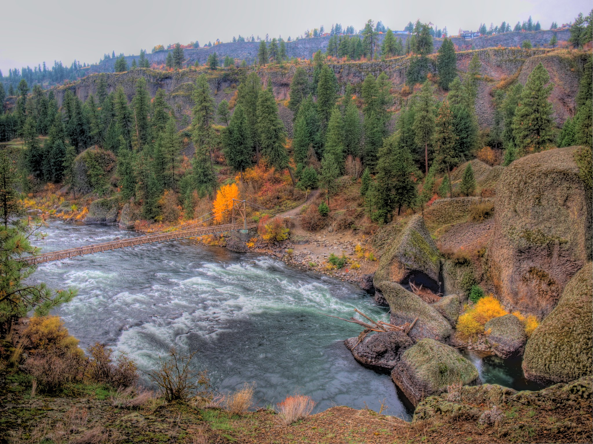
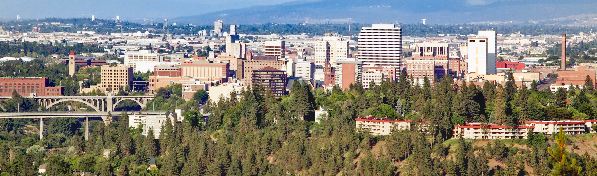

From the beautiful Spokane Falls, to the Centennial Trail, Spokane is a city with plenty of natural sights to
see! The man-made structures are nothing to scoff at either.
Manito park is home to many gorgeous species of flowers and even has a greenhouse containing tropical plants.
The Monroe Street bridge leads directly to the Spokane downtown area,
which is home to the River Park Square mall. A large 5-story mall that overlooks the Spokane river. With a wide
variety of goods and services, Spokane's downtown area has a little
something for everybody!

Bowl and Pitcher, Spokane WA
Geography
Spokane is located in eastern Washington near the Idaho border. Spokane was built alongside
the Spokane river, which runs from eastern Washington all the way out
to lake Coeur d'Alene in Idaho. In the summer months, Spokane's temperature can get well over 90°F and
the colder winter months can drop below 20°F. In fact, Spokane gets an
average of 48 inches of snow every year.

City of Spokane
Demographics
Spokane was officially incorporated back in 1881, when it was previously known as Spokane
Falls. Being the second largest metropolitan city Washington, Spokane
is classified as an urban city. The total population of Spokane as of 2021 was
225,709. White people are the largest ethnic group in the city, making up
80.3% of the total population. The next largest ethnic group is 2+ non-hispanic races, totaling 5.42% of the
population. The next largest ethnic group is white-hispanics, filling in
2.8% of the population.
Economy
Spokane is home to many diverse industries. The top-5 largest industries in Spokane as of 2021 are the
following:
Health Care and Social Assistance (19,930 workers employed)
Retail Trade (12,062 workers employed)
Educational Services (9,393 workers employed)
Accomodation and Food Services (8,900 workers employed)
Manufacturing (7,454 wokrers employed)
The average Spokane worker made $59,405 dollars per year as of 2022. According to the Employment
Security Department of Washington, this is 28.5% lower than the average
Washingtonian in 2022, who made $84,167 dollars per year.